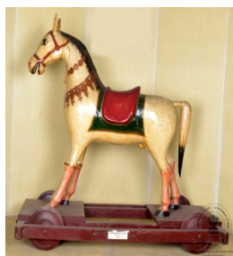

🔇 Is bhasha me is vastu ka audio abhi uplabdh nahi hai.
9. बिना संख्या - 4995: घोड़े की मूर्ति

9. बिना संख्या - 4995
बड़ा घोड़ा अथवा मूर्ति, चार पहियों सहित, आयताकार आधार पर खड़ा है जिसे लाल और हरे रंग से रंगा गया है। इसकी गले की माला के चारों ओर पत्तों जैसे अलंकरण बने हैं। लगभग 4 फीट ऊँची यह प्रतिमा पीले रंग में रंगी है, जिसमें हरे रंग का अयाल (कंठ के बाल) और काली पूँछ है। काठी और लगाम को भव्य सजावट से सजाया गया है। यह भारत से उत्पन्न हुई है और 20वीं शताब्दी की है। यह पेपियर माशे से बनाई गई है। पेपियर माशे एक हस्तशिल्प तकनीक है जिसमें कागज को गोंद या प्लास्टर जैसे बाइंडर के साथ मिलाकर गूंधा जाता है ताकि त्रि-आयामी वस्तुएँ बनाई जा सकें, जैसे मूर्तियाँ, मुखौटे, कटोरे, जानवर और अन्य सजावटी वस्तुएँ। कागज को पानी में भिगोकर गूंधकर गाढ़ा मिश्रण बनाया जा सकता है, या इसे अपने मूल रूप में भी प्रयोग किया जा सकता है, जैसे टुकड़ों में फाड़कर अथवा पट्टियों में काटकर।
9. Un-numbered - 4995: Figure of a Horse
9. Un-numbered - 4995
A large horse, or figure, mounted on four wheels, standing on a rectangular base painted red and green. Leaf-like ornamentation surrounds the garland at its neck. About 4 feet tall, the figure is painted yellow, with a green mane and a black tail. The saddle and bridle are richly decorated. It originates from India and dates to the 20th century. It is made of papier-mâché. Papier-mâché is a craft technique in which paper is kneaded together with a binder such as glue or plaster to create three-dimensional objects — figures, masks, bowls, animals and other decorative pieces. The paper may be soaked in water and kneaded into a thick pulp, or used in its original form, torn into pieces or cut into strips.
9. UN NUMBERED - 4995: గుర్రం బొమ్మ
9. UN NUMBERED - 4995
ఈ పెద్ద గుర్రం బొమ్మ లేదా శిల్పం 20వ శతాబ్దానికి చెందిన భారతీయ కళాఖండం. దీనిని పేపర్ మాషే సాంకేతికతతో తయారు చేశారు. నాలుగు చక్రాలు ఉన్న ఈ బొమ్మ, ఎరుపు మరియు ఆకుపచ్చ రంగు వేసిన దీర్ఘచతురస్రాకారపు ప్లాట్ఫారమ్పై నిలబడి ఉంది. ఈ గుర్రం దాదాపు 4 అడుగుల ఎత్తు ఉండి, పసుపు రంగు వేయబడింది. దీనికి ఆకుపచ్చ జూలు (mane) మరియు నలుపు తోక ఉన్నాయి. దాని మెడ చుట్టూ ఆకు ఆకారపు ఆభరణాలు అలంకరించబడ్డాయి, మరియు దాని సేడిల్ మరియు కళ్లెం (bridle) ఉన్నతంగా అలంకరించబడ్డాయి. (పేపర్ మాషే అనేది కాగితాన్ని జిగురు వంటి బైండర్తో గుజ్జుగా లేదా ముక్కలుగా చేసి త్రి-మితీయ వస్తువులను తయారుచేసే ఒక కళారూపం.)
8. CS - I - 318: பிரம்மாவின் உருவம்(FIGURE OF A LORD BRAHMA)
8. CS - I - 318
நான்குசக்கரங்களுடன்கூடியபெரியபழமையானகுதிரைஉருவச்சிலை. இதுசிவப்புமற்றும்பச்சைநிறங்களில்அலங்கரிக்கப்பட்டசெவ்வகமேடையின்மீதுநிற்கும்நிலையில்காணப்படுகிறது. அதன்கழுத்துப்பகுதியில்இலைவடிவஅலங்காரங்கள்உள்ளன. சுமார் 4 அடிஉயரம்கொண்டஇந்தகுதிரைமஞ்சள்நிறத்தில்வர்ணம்பூசப்பட்டு, பச்சைநிறமுடியும்கருப்புநிறவாலும்கொண்டுள்ளது. மேலும்குதிரையின்சேணைஇருக்கையும்கடிவாளமும்அழகாகஅலங்கரிக்கப்பட்டுள்ளன.இந்தஉருவச்சிலைஇந்தியாவைச்சேர்ந்தது; இது 20ஆம்நூற்றாண்டைச்சேர்ந்ததாகக்கருதப்படுகிறது. இது ‘பேப்பியர்மாசே’ என்றகைவினைமுறையில்தயாரிக்கப்பட்டுள்ளது. பேப்பியர்மாசேஎன்பதுகாகிதத்தைபிசைந்து, ஒட்டுப்பொருள்அல்லதுபிளாஸ்டர்போன்றஇணைப்புப்பொருளுடன்கலந்துமுப்பரிமாணஅதாவது3Dவடிவங்களில்உருவாக்கும்கைவினைமுறையாகும். இந்தமுறையில்முகமூடிகள், கிண்ணங்கள், விலங்குஉருவங்கள்மற்றும்பலஅலங்காரப்பொருட்கள்தயாரிக்கப்படுகின்றன. காகிதம்தண்ணீரில்ஊறவைத்துபிசைந்துகலவையாகஉருவாக்கப்படலாம்அல்லதுகாகிதத்தைநறுக்கிதுண்டுகளாககிழித்துபயன்படுத்தலாம்.
9. क्रमांकाशिवाय - 4995: घोड्याची मूर्ती
9. क्रमांकाशिवाय - 4995
चार चाकांसह मोठा घोडा अथवा मूर्ती, लाल व हिरव्या रंगाने रंगवलेल्या आयताकृती आधारावर उभी आहे. तिच्या गळ्यातील माळेभोवती पानांसारखी अलंकरणे केली आहेत. सुमारे ४ फूट उंचीची ही मूर्ती पिवळ्या रंगात रंगवली असून तिची आयाळ हिरवी आणि शेपूट काळी आहे. खोगीर आणि लगाम भव्य सजावटीने सजवले आहेत. ही मूर्ती भारतातील असून २०व्या शतकातील आहे. ती पेपियर माशेपासून बनवली आहे. पेपियर माशे हे एक हस्तकला तंत्र आहे, ज्यात कागद गोंद किंवा प्लास्टरसारख्या बाइंडरमध्ये मिसळून मळला जातो, जेणेकरून मूर्ती, मुखवटे, वाट्या, प्राणी व इतर सजावटीच्या वस्तूंसारख्या त्रिमितीय वस्तू बनवता येतील. कागद पाण्यात भिजवून मळून घट्ट मिश्रण बनवता येते, किंवा त्याचा मूळ स्वरूपातही वापर करता येतो — तुकडे फाडून अथवा पट्ट्यांत कापून.
9. യുഎൻ നമ്പർ-4995: ഒരുകുതിരയുടെ ചിത്രം
9. യുഎൻ നമ്പർ-4995
9. യുഎൻ നമ്പർ-4995: ഒരുകുതിരയുടെചിത്രം :
ചുവപ്പും പച്ചയും ചായം പൂശിയ ചതുരാകൃതിയിലുള്ള ഒരു തറയിൽ നാല് ചക്രങ്ങളുമായി നിൽക്കുന്ന വിന്റേജ് ശൈലിയിലുള്ള ഒരു വലിയ കുതിര ശില്പമാണിത്. ഇതിന്റെ കഴുത്തിലെ മാലയ്ക്ക് ചുറ്റും ഇലകൾ പോലുള്ള അലങ്കാരങ്ങൾ കാണാം. ഏകദേശം 4 അടി ഉയരമുള്ള ഈ ശില്പത്തിന് മഞ്ഞ നിറമാണ് നൽകിയിരിക്കുന്നത്; കുതിരയുടെ കഴുത്തിലെ രോമങ്ങൾക്ക് പച്ച നിറവും വാലിന് കറുപ്പ് നിറവുമാണ്. ഇതിന്റെ ജീനിയും മുഖത്തെ കടിഞ്ഞാണും വളരെ മനോഹരമായി അലങ്കരിച്ചിരിക്കുന്നു.പപ്പിയർ-മാഷേ സാങ്കേതികവിദ്യ ഉപയോഗിച്ചാണ് ഇത് നിർമ്മിച്ചിരിക്കുന്നത്. കടലാസ് പൾപ്പ് രൂപത്തിലാക്കി പശയോ പ്ലാസ്റ്ററോ ചേർത്ത് രൂപങ്ങൾ നിർമ്മിക്കുന്ന രീതിയാണിത്. മൂന്ന് അളവുകളുള്ള ശില്പങ്ങൾ, മാസ്കുകൾ, പാത്രങ്ങൾ, മൃഗരൂപങ്ങൾ എന്നിവ നിർമ്മിക്കാൻ ഈ രീതി ഉപയോഗിക്കുന്നു.കടലാസ് വെള്ളത്തിൽ കുതിർത്ത് അരച്ചെടുത്ത് കുഴമ്പ് രൂപത്തിലോ, അല്ലെങ്കിൽ ചെറിയ കഷ്ണങ്ങളാക്കി കീറിയോ ഇത് നിർമ്മിക്കാവുന്നതാണ്.ഭാരതത്തിൽ ഉത്ഭവിച്ച ഈ കലാരൂപംഇരുപതാം നൂറ്റാണ്ടിലേതാണെന്ന്കരുതപ്പെടുന്നു.
ചുവപ്പും പച്ചയും ചായം പൂശിയ ചതുരാകൃതിയിലുള്ള ഒരു തറയിൽ നാല് ചക്രങ്ങളുമായി നിൽക്കുന്ന വിന്റേജ് ശൈലിയിലുള്ള ഒരു വലിയ കുതിര ശില്പമാണിത്. ഇതിന്റെ കഴുത്തിലെ മാലയ്ക്ക് ചുറ്റും ഇലകൾ പോലുള്ള അലങ്കാരങ്ങൾ കാണാം. ഏകദേശം 4 അടി ഉയരമുള്ള ഈ ശില്പത്തിന് മഞ്ഞ നിറമാണ് നൽകിയിരിക്കുന്നത്; കുതിരയുടെ കഴുത്തിലെ രോമങ്ങൾക്ക് പച്ച നിറവും വാലിന് കറുപ്പ് നിറവുമാണ്. ഇതിന്റെ ജീനിയും മുഖത്തെ കടിഞ്ഞാണും വളരെ മനോഹരമായി അലങ്കരിച്ചിരിക്കുന്നു.പപ്പിയർ-മാഷേ സാങ്കേതികവിദ്യ ഉപയോഗിച്ചാണ് ഇത് നിർമ്മിച്ചിരിക്കുന്നത്. കടലാസ് പൾപ്പ് രൂപത്തിലാക്കി പശയോ പ്ലാസ്റ്ററോ ചേർത്ത് രൂപങ്ങൾ നിർമ്മിക്കുന്ന രീതിയാണിത്. മൂന്ന് അളവുകളുള്ള ശില്പങ്ങൾ, മാസ്കുകൾ, പാത്രങ്ങൾ, മൃഗരൂപങ്ങൾ എന്നിവ നിർമ്മിക്കാൻ ഈ രീതി ഉപയോഗിക്കുന്നു.കടലാസ് വെള്ളത്തിൽ കുതിർത്ത് അരച്ചെടുത്ത് കുഴമ്പ് രൂപത്തിലോ, അല്ലെങ്കിൽ ചെറിയ കഷ്ണങ്ങളാക്കി കീറിയോ ഇത് നിർമ്മിക്കാവുന്നതാണ്.ഭാരതത്തിൽ ഉത്ഭവിച്ച ഈ കലാരൂപംഇരുപതാം നൂറ്റാണ്ടിലേതാണെന്ന്കരുതപ്പെടുന്നു.
9. UN NUMBERED -4995: ಫಿಗರ್ ಆಫ್ ಎ ಹಾರ್ಸ್
9. UN NUMBERED -4995
ಕೆಂಪು ಮತ್ತು ಹಸಿರು ಬಣ್ಣದ ಆಯತಾಕಾರದ ವೇದಿಕೆಯ ಮೇಲೆ ನಿಂತಿರುವ, ನಾಲ್ಕು ಗಾಲಿಗಳನ್ನು ಹೊಂದಿರುವ ಕುದುರೆಯ ದೊಡ್ಡ ಹಾಗೂ ಪ್ರಾಚೀನ ಶಿಲ್ಪ ಕಲಾಕೃತಿ ಇದು. ಇದರ ಕುತ್ತಿಗೆಯ ಸುತ್ತ ಎಲೆಯಾಕಾರದ ಆಭರಣಗಳ ಅಲಂಕಾರವಿದೆ. ಸುಮಾರು 4 ಅಡಿ ಎತ್ತರವಿರುವ ಇದಕ್ಕೆ ಹಳದಿ ಬಣ್ಣ ಬಳಿಯಲಾಗಿದ್ದು, ಹಸಿರು ಬಣ್ಣದ ಅಯಾಲು (ಕುದುರೆಯ ಕತ್ತಿನ ಮೇಲಿನ ಕೂದಲು) ಮತ್ತು ಕಪ್ಪು ಬಣ್ಣದ ಬಾಲವನ್ನು ಹೊಂದಿದೆ. ಇದರ ಜೀನು ಮತ್ತು ಲಗಾಮನ್ನು ಅತ್ಯಂತ ಭವ್ಯವಾಗಿ ಅಲಂಕರಿಸಲಾಗಿದೆ. ಭಾರತದಲ್ಲಿಯೇ ರೂಪುಗೊಂಡಿರುವ ಇದು 20ನೇ ಶತಮಾನದಷ್ಟು ಹಳೆಯದಾಗಿದೆ ಮತ್ತು ಇದನ್ನು 'ಪೇಪರ್ ಮ್ಯಾಷೆ' ಕರಕುಶಲ ತಂತ್ರದಿಂದ ತಯಾರಿಸಲಾಗಿದೆ. ಪೇಪರ್ ಮ್ಯಾಷೆ ಎಂಬುದು ಕಾಗದವನ್ನು ಅಂಟು ಅಥವಾ ಪ್ಲಾಸ್ಟರ್ನಂತಹ ಬಂಧಕ ವಸ್ತುವಿನೊಂದಿಗೆ ಬೆರೆಸಿ ಮೃದುವಾದ ಹದಕ್ಕೆ ತಂದು, ಮುಖವಾಡಗಳು, ಬಟ್ಟಲುಗಳು, ಪ್ರಾಣಿಗಳು ಮತ್ತು ಇತರ ಅಲಂಕಾರಿಕ ವಸ್ತುಗಳಂತಹ ತ್ರೀ-ಡೈಮೆನ್ಷನಲ್ ಅಥವಾ ಮೂರು ಆಯಾಮದ ವಸ್ತುಗಳನ್ನು ಮತ್ತು ಶಿಲ್ಪಕಲಾಕೃತಿಗಳನ್ನು ರಚಿಸುವ ಒಂದು ಕರಕುಶಲ ತಂತ್ರವಾಗಿದೆ. ಕಾಗದವನ್ನು ನೆನೆಸಿ ಮತ್ತು ಮೃದುಗೊಳಿಸಿ ದಪ್ಪನೆಯ ದ್ರವವನ್ನಾಗಿ ಮಾಡಬಹುದು, ಅಥವಾ ಕಾಗದವನ್ನು ಅದರ ಮೂಲ ರೂಪದಲ್ಲಿಯೇ ಚೂರುಚೂರಾಗಿ ಕತ್ತರಿಸಿ ಅಥವಾ ಪಟ್ಟಿಗಳಾಗಿ ಹರಿದು ಬಳಸಬಹುದು.
9. UN NUMBERED - 4995:ଗୋଟିଏ ଘୋଡାର ମୂର୍ତ୍ତି
9. UN NUMBERED - 4995
ଏହା ଗୋଟିଏ ବିଶାଳଲାଲ ଏବଂ ସବୁଜ ରଙ୍ଗରେ ରଙ୍ଗିତ ଆୟାତାକାର ଚାରୋଟି ଚକ ସଂଶ୍ଳିଷ୍ଟ ପୃଷ୍ଟଭୂମିରେ ଛିଡ଼ା ହୋଇଥିବା ଘୋଡାଟିଏ କିମ୍ବା ଗୋଟିଏ ଶ୍ରେଷ୍ଠ ମୂର୍ତ୍ତି। ଏହାର ବେକ ଚାରିପାଖରେ ପତ୍ର ସଦୃଶ ଅଳଙ୍କାର ରହିଅଛି। ଏହା ପ୍ରାୟ ଚାରି ଫୁଟ ଉଚ୍ଚ, ହଳଦିଆ ରଙ୍ଗରେ ରଙ୍ଗିତ, ବେକର ବାଳସବୁଜଏବଂ କଳା ଲାଞ୍ଜ ସହିତ ଚିତ୍ରିତ। ଏହାର ପିଠି ଏବଂ ଲଗାମକୁ ଅତି ସୁନ୍ଦର ଭାବରେ ସଜାଯାଇଛି। ଏହା ଭାରତରେ ତିଆରି ହୋଇଥିଲା। ଏହାର ଇତିହାସ 20ଶ ଶତାବ୍ଦୀର ଅଟେ। ଏହା ପେପିଅର-ମାଚେରୁ ତିଆରି। ପେପିଅର-ମାଚେ ହସ୍ତଶିଳ୍ପ ନିମନ୍ତେ ନିର୍ମିତ ହୋଇଥାଏ, ଯେଉଁଥିରେ କାଗଜକୁ ଗ୍ଲୁ କିମ୍ବା ପ୍ଲାଷ୍ଟର ଭଳି ଏକ ବାଇଣ୍ଡର ସହିତ ମିଶ୍ରିତ କରି ପେଷ୍ଟ ଭଳି ଗଠନ କରାଯାଏ,ଯେଉଁଥିରୁ ତ୍ରି-ପରିମାଣୀୟ ବସ୍ତୁ ସୃଷ୍ଟି କରାଯାଏ, ଯେପରିକି ପ୍ରତିମା କିମ୍ବା 3D ଜାତୀୟ ବସ୍ତୁ ଯଥା,ମୁଖା, ପାତ୍ର, ପଶୁ ଏବଂ ଅନ୍ୟାନ୍ୟ ସାଜସଜ୍ଜା ସମ୍ଭନ୍ଧୀୟ ବସ୍ତୁ। କାଗଜକୁ ଭିଜାଇ ପଲ୍ପ କରି ତରଳ ପଦାର୍ଥ ସୃଷ୍ଟି କରାଯାଇଥାଏ, କିମ୍ବା ଏହାକୁ ଏହାର ମୂଳ ରୂପରେ ମଧ୍ୟବ୍ୟବହାରକରାଯାଇପାରିବ, ଖଣ୍ଡ ଖଣ୍ଡ କରି କିମ୍ବା ଲମ୍ବା ଭାବରେ ଚିରି।
9. UN NUMBERED - 4995: অশ্ব-মূর্তি
9. UN NUMBERED - 4995
চারটি চাকাযুক্ত একটি বৃহৎ প্রাচীন ঘোড়ার মূর্তি বা ভাস্কর্য, যা লাল ও সবুজ রঙের একটি আয়তাকার মঞ্চের ওপর দাঁড়িয়ে আছে। এর গলার হারের চারপাশে পাতার মতো অলঙ্কার রয়েছে। প্রায় ৪ ফুট উচ্চতার এই ঘোড়াটি হলুদ রঙে রঞ্জিত, যার কেশর সবুজ এবং লেজ কালো রঙের। এর জিন এবং লাগামটিঅত্যন্ত জাঁকজমকপূর্ণভাবে সজ্জিত। এর উৎপত্তি ভারতবর্ষে এবং এটি ২০ শতকের একটি নিদর্শন। এটি পেপিয়ার ম্যাশে দিয়ে তৈরি। পেপিয়ার ম্যাশে হলো এমন এক শিল্পকলা, যেখানে কাগজের মণ্ডকে আঠা বা প্লাস্টারের মতো কোনো বাঁধনদার উপাদানের সাথে মিশিয়ে ত্রিমাত্রিক বস্তু রূপে তৈরি করা হয়; যেমন—ভাস্কর্য, মুখোশ, বাটি, পশুপাখি এবং অন্যান্য ঘর-সাজানোর সামগ্রী। এই পদ্ধতিতে কাগজ ভিজিয়ে মণ্ড বা কাই তৈরি করা হয়, অথবা কাগজকে তার আদি আকারে ছোট ছোট টুকরো বা ফালি করে ছিঁড়েও ব্যবহার করা হয়।
9. غیر نمبرہ زدہ-4995: گھوڑے کا مجسمہ
9. غیر نمبرہ زدہ-4995
بڑا گھوڑا یا مجسمہ، جس میں چار پہیے ہیں، ایک مستطیل پلیٹ فارم پر کھڑا ہے جو سرخ اور سبز رنگ میں ہے۔ اس کے ہار کے گرد پتے نما سجاوٹی عناصر ہیں۔ تقریباً 4 فٹ بلند، پیلا رنگ کا، سبز گریوان اور سیاہ دم کے ساتھ۔ زین اور لگام خوبصورتی سے مزین ہیں۔ یہ ہندوستان سے تعلق رکھتا ہے اور 20ویں صدی کا ہے۔ یہ پیپیئر ماشےسے بنایا گیا ہے۔ پیپیئر ماشے ایک کاریگری کی تکنیک ہے جس میں کاغذ کو چپکانے والے مادہ جیسے گوند یا پلاسٹر کے ساتھ گودا بنا کر تین بعدی اشیاء تخلیق کی جاتی ہیں، جیسے مجسمے یا ماسک، پیالے، جانور اور دیگر سجاوٹی اشیاء۔ کاغذ کو بھگو کر اور گودا بنا کر یا اس کی اصل حالت میں، یعنی چیر کر یا پٹیوں میں کاٹ کر استعمال کیا جا سکتا ہے۔
9. UN NUMBERED-4995: ઘોડાની આકૃતિ
9. UN NUMBERED-4995
ચાર પૈડાંવાળો મોટો ઘોડો અથવા શિલ્પ, જે લાલ અને લીલા રંગમાં રંગાયેલ છે અને લંબચોરસ મંચ પર ઉભો છે. તેના ગળાની ફરતે પાંદડા જેવા આભૂષણો છે. લગભગ 4 ફૂટ ઊંચો, પીળો રંગે રંગાયેલો છે, અને તેને લીલી કેશવાળી અને કાળી પૂંછડી છે. કાઠી અને લગામ ભવ્ય રીતે શણગારવામાં આવી છે. તેનો ઉદ્ભવ ભારતમાં થયો છે. તેનો ઇતિહાસ 20મી સદીનો છે. તેને પેપર મેચે તકનીકથી બનાવવામાં આવ્યું છે. પેપર મેચે - તે એક હસ્તકલા તકનીક છે જેમાં કાગળને ગુંદર અથવા પ્લાસ્ટર જેવા બાઈન્ડરથી પલ્પ કરવામાં આવે છે જેથી ત્રિ-પરિમાણીય વસ્તુઓ, જેમ કે શિલ્પો અથવા માસ્ક, બાઉલ, પ્રાણીઓ અને અન્ય સુશોભનની વસ્તુઓ જેવી 3D વસ્તુઓ બનાવવામાં આવે છે. કાગળને પલાળીને દ્રાવણમાં પલ્પ કરી શકાય છે, અથવા તેનો ઉપયોગ તેના મૂળ સ્વરૂપમાં કરી શકાય છે, તેને કાપીને અથવા પટ્ટાઓમાં ફાડીને કરી શકાય છે.